Reject the exact defect
A manifest digest mismatch returns FILE_DIGEST. Publishing remains disabled until the corrected bytes pass validation and the real scanner.
Ruby engineering · integration reliability
MESH keeps the operation, explains the uncertainty and reconciles with the partner — without publishing twice.
The failure is real
Unedited browser screencast of the existing application. Russian UI, English captions, no audio. The lost response is injected through the real API; the independent Node/SQLite partner commits before the reply is lost. No API responses or displayed states are mocked.
A manifest digest mismatch returns FILE_DIGEST. Publishing remains disabled until the corrected bytes pass validation and the real scanner.
HTTP_TIMEOUT becomes unknown. Read-only diagnostics explain lookup_only and explicitly state that the report did not query the partner.
The ordinary dispatcher looks up the original operation. Its identity, digest and sequence must match before confirmation.
A useful frontend, a Ruby core
The marketplace follows brief → proposal → immutable agreement → versioned delivery → acceptance. Publishing adds a focused external integration lab. All images below are actual application captures; portraits and portfolio artwork are illustrative demo assets.
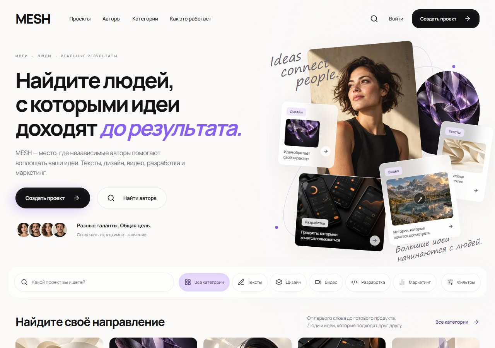
Editorial discovery introduces projects, categories and creators. The catalogue is backed by the Rails API; this image is captured after project data arrives.
Inspect the relevant code ↗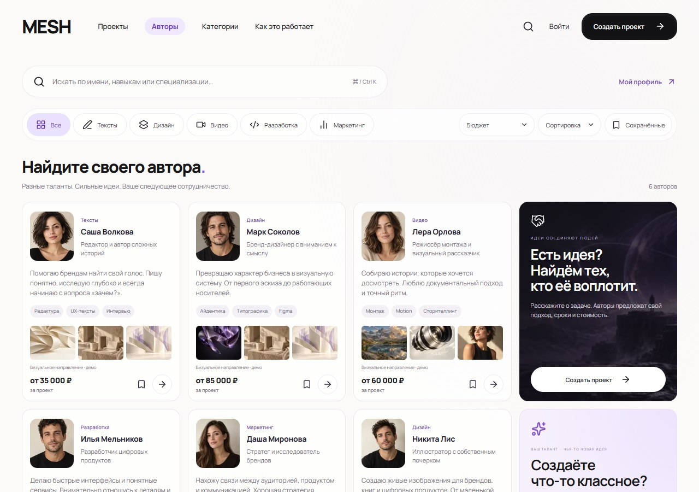
Six actual synthetic profiles, skills and prices. Cards and all visible images were loaded before capture. Portrait and portfolio imagery is illustrative.
Inspect the relevant code ↗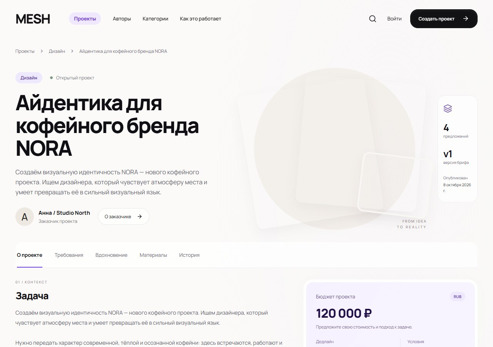
A public brief holds requirements, references, materials and versioned project information. A proposal is attached to the brief version it answers.
Inspect the relevant code ↗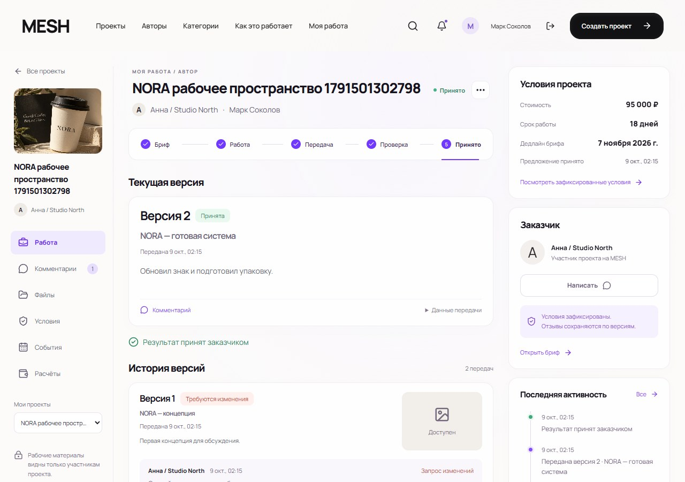
The author workspace keeps agreed cost and deadline together with submitted versions and feedback. This capture shows two real versions and acceptance of the second.
Inspect the relevant code ↗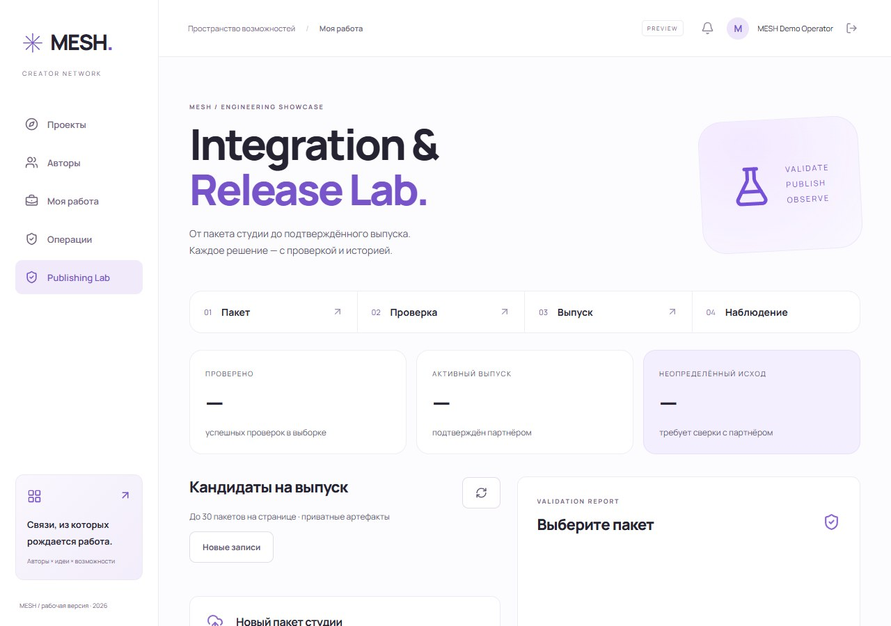
An authenticated operator works with private packages, validation reports and durable release history. The recording uses its own synthetic operator.
Inspect the relevant code ↗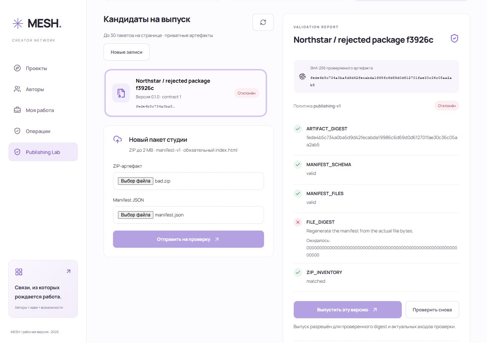
FILE_DIGEST explains the mismatch and the expected value. The rejected package cannot authorize publication.
Inspect the relevant code ↗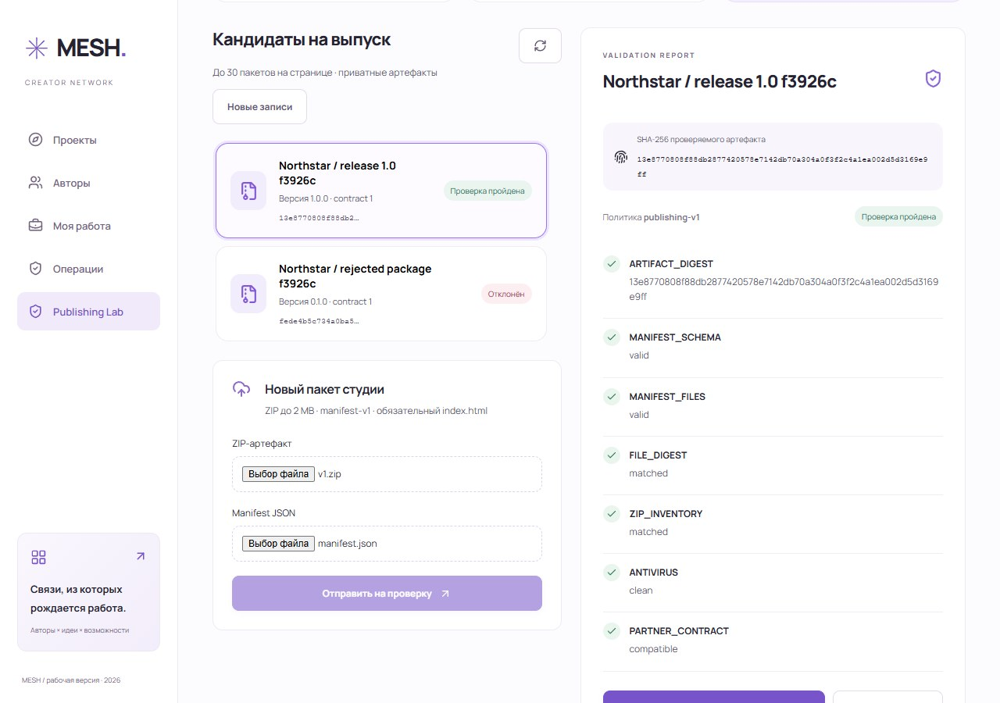
The corrected ZIP passes inventory, manifest, file-digest, real antivirus and partner-contract checks. The result is tied to policy and configuration.
Inspect the relevant code ↗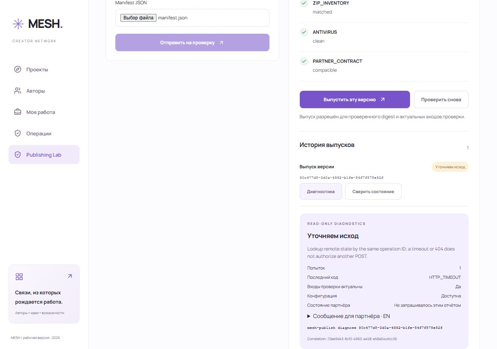
The real peer commits but its response is lost. HTTP_TIMEOUT retains the operation ID and exposes a safe lookup-only next action.
Inspect the relevant code ↗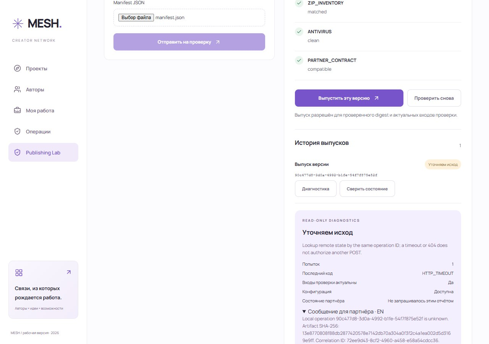
A read-only snapshot explains the state, last error and safe action. It explicitly says remote state was not queried by this report. The operator reviews the English update before sending it.
Inspect the relevant code ↗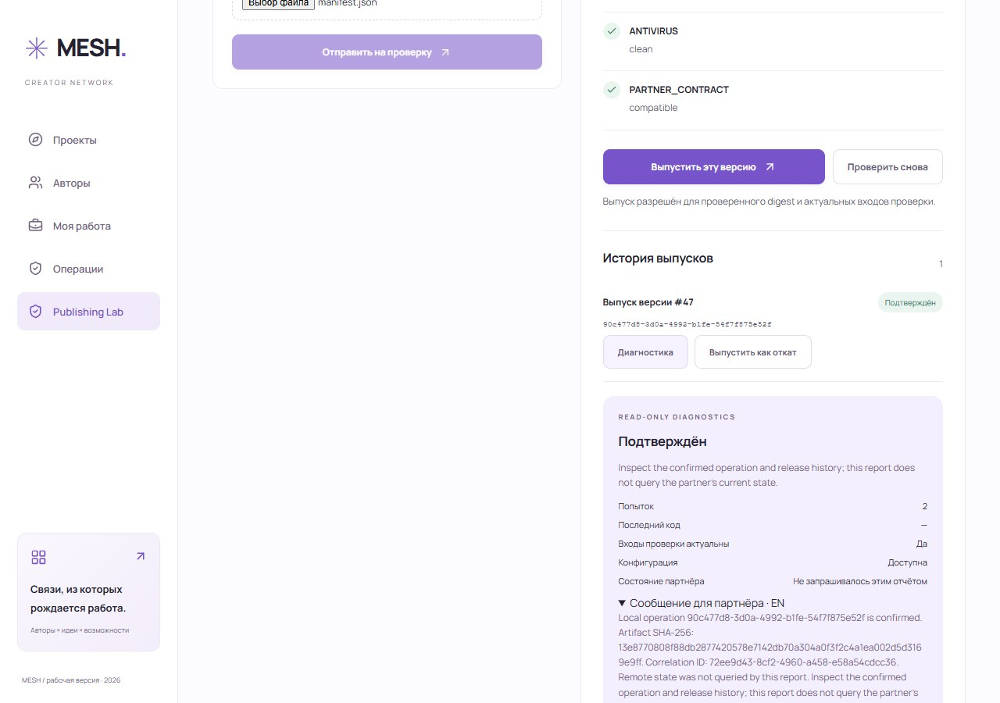
The ordinary dispatcher reconciles by lookup. The capture proof records one POST, one remote effect and the same original/recovered operation ID.
Inspect the relevant code ↗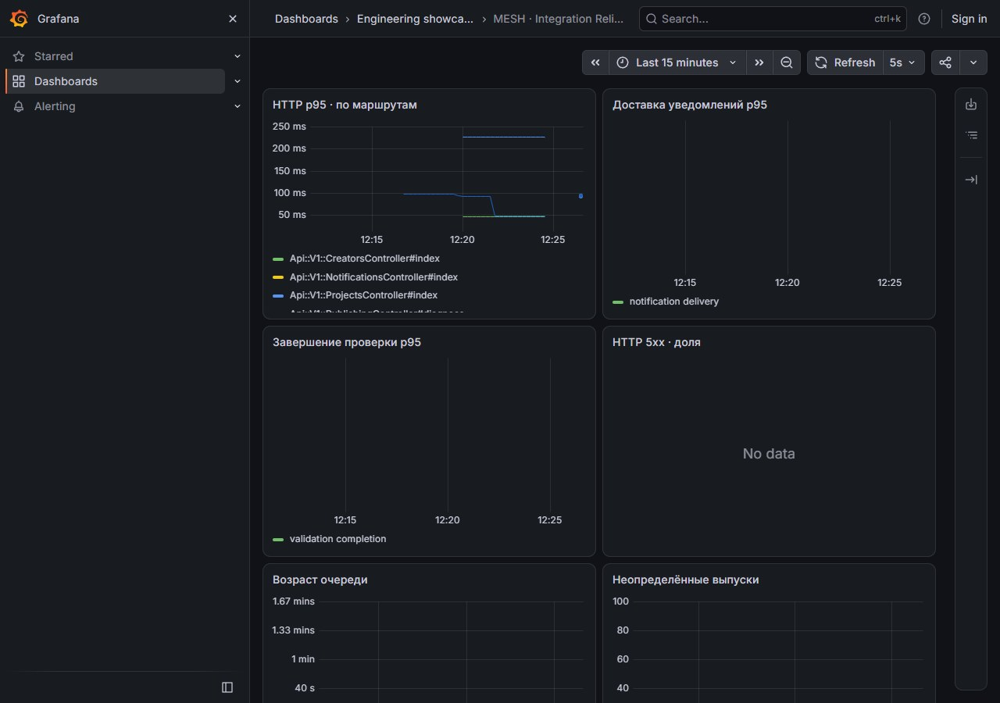
The local Grafana dashboard reads real Prometheus data: HTTP latency, jobs and unfinished work. This screenshot demonstrates a working dashboard, not a long production SLO window.
Inspect the relevant code ↗Executed, not just configured
Accepted application release: 3d849af. Recording and first clean preparation: fa40e97, with application source unchanged. Each linked report has its own source revision and environment. A scan is a dated observation, not a permanent security guarantee.
Explain the guarantee and its cost
Eight-domain Rails monolith. Framework-independent Domain/Application layers for Publishing execution. PostgreSQL, private storage and HTTP adapters protect real invariants; the rest stays idiomatic Rails.